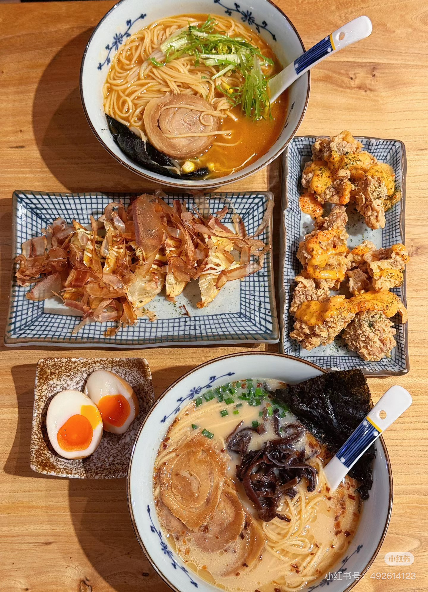
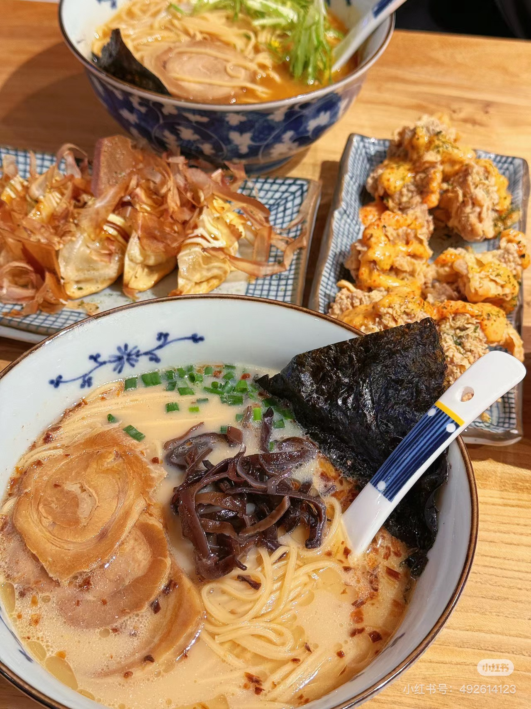
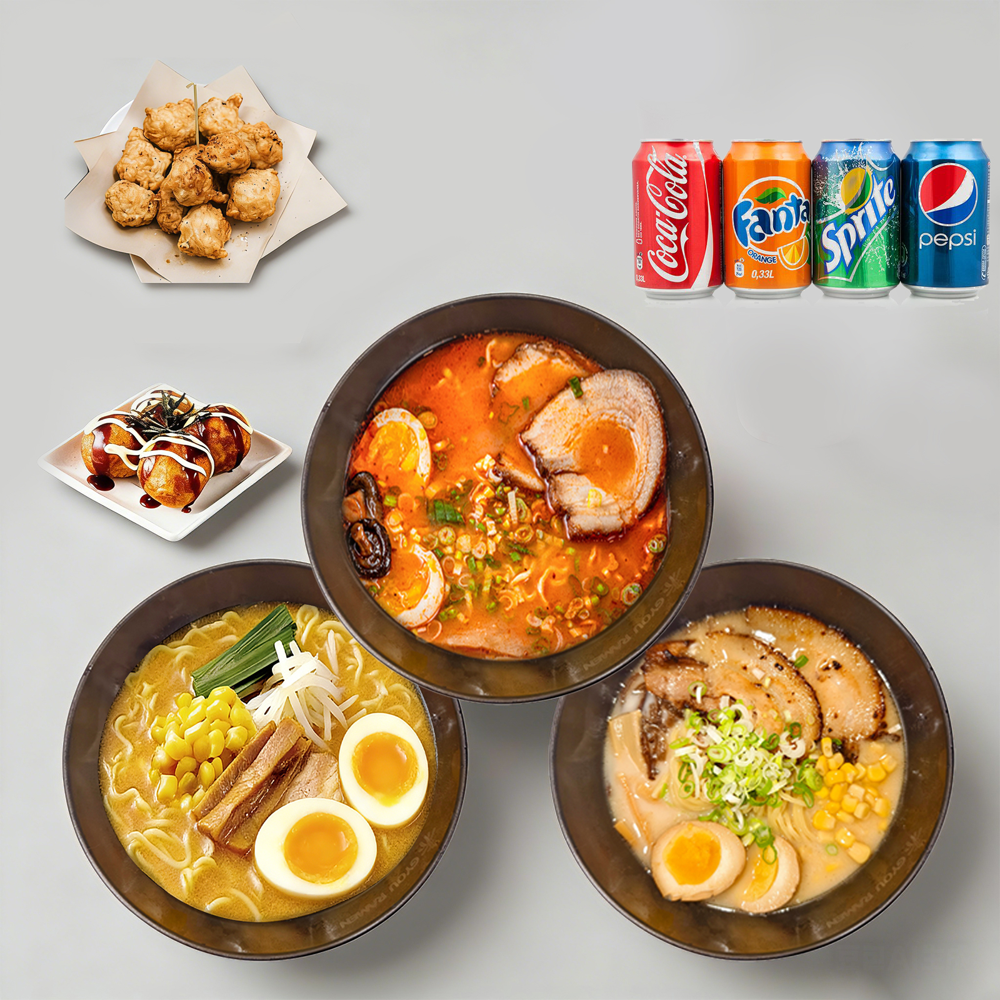
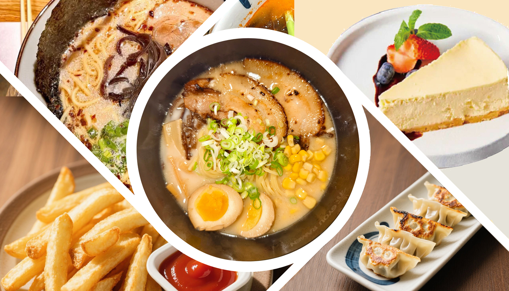

A Bowl of Passion
GYOU RAMEN was born from a simple but powerful belief: that great ramen has the power to connect people, bring comfort, and tell a story — one bowl at a time.
Proudly rooted in Toronto, we celebrate the harmony between Japanese tradition and local Canadian creativity. Our chefs honor authentic ramen-making techniques while adding a touch of modern flair, creating a dining experience that feels both comforting and exciting.
Every bowl at GYOU RAMEN tells a story — simmered for hours, seasoned to perfection, and served with genuine care. From creamy tonkotsu to light shoyu and fiery miso, we believe everyone deserves a bowl that warms both the stomach and the soul.
Explore Our Menu
Come As You Are
A warm, welcoming space where every table tells a story. Grab a seat and let us take care of the rest.



Built on Three Pillars
Everything we do at GYOU RAMEN comes back to these three commitments.
🍜 Authenticity
We never cut corners on flavor. Our recipes honor Japanese ramen traditions — every broth simmered low and slow, every noodle made to spec, every topping chosen with intention.
🇨🇦 Community
Rooted in Toronto, proud to be Canadian. We hire locally, source thoughtfully, and believe our restaurant should be a gathering place — not just a dining destination.
🤝 Hospitality
From the moment you walk in to the last drop of broth, you deserve to feel cared for. Our team is trained not just in technique, but in genuine human warmth.
Guided by What Matters
Passion Over Perfection
We obsess over flavor, not appearance. A great bowl of ramen is about soul — and we pour ours into every recipe.
Fresh, Always
No freezer shortcuts. Every ingredient — from our soft-boiled eggs to our chashu — is prepared fresh each day.
Consistency You Can Count On
Whether it's your first visit or your hundredth, your bowl should taste exactly the way you remember it. That's our standard.
Growth with Purpose
As we expand across Canada, we're committed to bringing the same heart and quality to every new community we enter.
A Growing Family
What started as a single location on Yonge Street has grown into a brand with a team of over 1,500 dedicated professionals — all sharing the same mission.
Our investment in people, training, and quality systems is what makes GYOU RAMEN not just a restaurant, but a platform for growth — for our team, our franchisees, and our communities.
Explore Franchise Opportunities